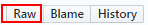

本地制卡
环境准备
SD卡通过USB方式连接的Linux服务器（Mind Studio所在服务器）已接入网络。
制卡前，请确保Mind Studio所在Linux服务器已安装qemu-user-static、binfmt-support、yaml与交叉编译器。
如果Linux服务器已接入网络，可执行如下命令安装：
su - root
apt-get install qemu-user-static binfmt-support python3-yaml gcc-aarch64-linux-gnu g++-aarch64-linux-gnu
如果Linux服务器未接入网络，请自行下载相关源进行安装。
软件包准备
获取SD卡制作脚本“make_sd_card.py“，“make_ubuntu_sd.sh“，Mini Package与Ubuntu Package。
下载信息如表1所示：
表 1 软件包信息
请从https://github.com/Ascend中的tools仓中获取。
请从https://github.com/Ascend中的tools仓中获取。
请从https://github.com/Ascend中的ascenddk-private仓中获取。
软件包下载后请参考软件完整性校验进行软件完整性校验。
请从http://old-releases.ubuntu.com/releases/16.04.3/网站下载对应版本软件进行安装。
 说明：
说明：
软件下载后请保持原命名。
若从github上下载单个文件，请进入文件后，右键单击Raw，选择“链接另存为“进行下载。

操作步骤
将软件包准备获取的SD卡制作脚本“make_sd_card.py“、“make_ubuntu_sd.sh“、Mini Package与Ubuntu Package上传到Mind Studio所在服务器任一目录，例如/home/ascend/mksd。
说明：
以上脚本与软件包请放置到同一目录下。
本地制卡只允许当前目录下存放一个版本的软件包。切换到root用户，并进入制卡脚本所在目录/home/ascend/mksd。
su - root
cd /home/ascend/mksd/
（可选）SD制卡脚本中默认配置的开发者板的USB连接方式的IP地址为192.168.1.2，网线连接方式的IP地址为192.168.0.2，如果需要更改默认的开发者板的IP地址，可分别修改“make_sd_card.py“中的“NETWORK_CARD_DEFAULT_IP“与“USB_CARD_DEFAULT_IP“的参数值。
执行制卡脚本。
执行fdisk -l命令查找SD卡所在的USB设备名称，例如“/dev/sda“。
运行SD制卡脚本“make_sd_card.py“。
python3 make_sd_card.py local /dev/sda
- “local“表示使用本地离线方式制作SD卡。
- “/dev/sda“为SD卡所在的USB设备名称。
如图1所示表示制卡成功。
说明：
如果制卡失败，可以查看当前目录下的sd_card_making_log文件夹下的日志文件进行分析。（可选）拔掉跳帽。
说明：
在没有读卡器的情况下，SD卡制作完成后，需要将跳帽拔掉。